The SplitsTree App is new software for exploring and analyzing phylogenetic data, with an emphasis on phylogenetic networks. Offering a comprehensive set of features, the software provides over 100 algorithms for computing distances, phylogenetic trees, split networks, haplotype networks, rooted phylogenetic networks, tanglegrams, consensus trees and consensus networks.
This new software [Huson and Bryant, 2024] is designed to accommodate the increasing scale and intricacy of modern data sets. It extends, integrates and supersedes our earlier applications SplitsTree4 [Huson and Bryant, 2006] for unrooted phylogenetic trees and networks, Dendroscope3 [D. H. Huson, 2012] for rooted trees and networks, and PopArt [Leigh and Bryant, 2015] for haplotype analysis.
If you use this program, the please cite:
Daniel H. Huson and David Bryant. The SplitsTree App: interactive analysis and visualization using phylogenetic trees and networks. Nature Methods (2024) https://doi.org/10.1038/s41592-024-02406-3.
In this chapter we give an overview of how the interface of the SplitsTree app is organised. Later we provide more details on the actual methods and procedures.
To get started using this program, download the latest installer from https://software-ab.cs.uni-tuebingen.de/download/splitstree6 for Linux, Mac OS X or Windows, and install the program on your computer. Versions for iOS and Android are being tested.
Launch the program by double-clicking the program icon or launch it from the command line (Linux).
Use the File->Open... menu item to open a file containing data in one of the supported formats (see Chapter D).
If the data you provide is set of characters (or multiple sequence alignment), then by default, the SplitsTree app will compute P-distances (see Section C.1) and then will run Neighbor Net (see Section C.2) to obtain a split network (see Section 1.10). If you provide a distance matrix, then this will also result in a split network being displayed. If you supply trees, then the first tree will be displayed (see Section 1.6).
Here is a toy example of characters data. You can copy this text from the manual and then paste it onto the import data button (see Section 1.3) to obtain the network show in the figure (see Fig. 1.1).
In the SplitsTree app, you can open one or more documents and each one has its own main window. Different analyses of the same data in the same document are shown in different tabs in that window (see Fig. 1.2). Tabs can be laid out side-by-side.
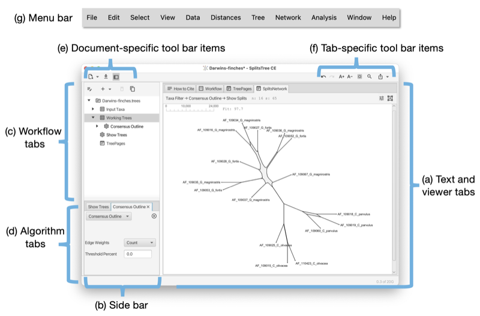
Each document opened in SplitsTree has its own main window. The main window has the following parts:
There are three document-specific toolbar items on the left side of the main toolbar and several tab-specific toolbar items ones on the right (see Fig. 1.2) (see Fig. 1.3).
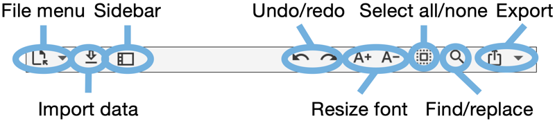
Document specific toolbar items:
Tab specific toolbar items (that apply only to the currently selected main tab):
The main window uses a tabbed pane to present all text and visualizations (see Fig. 1.2). Here is an overview of the supported tabs:
The Alignment tab provides a visualization of the input characters or multiple sequence alignment (see Fig. 1.4).
The alignment tab has a drop-down menu button at the left that contains items for selecting sites. There is a button for selecting a color scheme. There is a button for toggling between a close-up view and a total view of the alignment, and buttons for zooming in and out both vertically and horizontally.
The Tree-View tab shows a phylogenetic tree or a rooted network (see Fig. 1.5).
The tree view tab has a toolbar and side panel that are hidden by default, but can be opened using two toggle buttons at the top right of the tab.
The toolbar provides items for selecting how to draw the tree (or rooted network), the choices are between rectangular, circular and radial cladogram or phylogram. There is a button that toggles the scale bar and addition information (such as name of the tree, if any, and number of nodes, edges and leaves). In addition, there are buttons for rotating, flipping and zooming.
The side panel (on the right) contains items for styling the taxon labels and for adding marks to the taxa. These are colored shapes that appear next to the taxon label. There are items for displaying taxon traits, if present. Moreover, there are items for setting the line width of edges and to choose whether to label edges by associated weights or confidence values.
The Tree-Pages tab shows pages of phylogenetic trees (see Fig. 1.6).
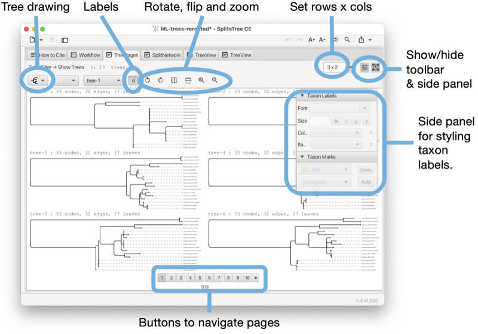
The tree-pages tab has a toolbar and side panel that are hidden by default, but can be opened using two toggle buttons at the top right of the tab.
The toolbar provides items for selecting how to draw the tree (or rooted network), the choices are between rectangular, circular and radial cladogram or phylogram. There is a button that toggles addition information (such as name of the tree, if any, and number of nodes, edges and leaves). In addition, there are buttons for rotating, flipping and zooming. At the right side of the toolbar, there is a text input field for setting the dimensions of a page in the format rows x cols.
The side panel contains items for styling the taxon labels and for adding marks to the taxa.
At the bottom of the tree-pages tab there is a row of buttons that can be used to navigate through the pages.
The Tanglegram tab shows a tanglegram of trees or rooted networks, which is calculated based on the objective of displacement optimization [Huson, 2025] (see Fig. 1.7).
The tanglegram tab has a toolbar and side panel that are hidden by default, but can be opened using two toggle buttons at the top right of the tab.
The toolbar provides items to determine the first and second trees (from the same file) and for selecting how to draw either tree (or rooted network), the choices are between rectangular phylogram, rectangular cladogram and triangular cladogram (trees only). There is a button that toggles addition information (such as name of the tree, if any, and number of nodes, edges and leaves). There are buttons for rotating, flipping and zooming.
There is a menu that allows one to select precisely what the target of displacement optimization should be, namely taxa or reticulate edges in which of the two phylogenies. In addition, if one of the two input phylogenies has a very unresolved node, that using the PQ-tree cluster heuristic may help to untangle that situation (but only when both sides are being untangled.)
The side panel contains items for styling the taxon labels and for adding marks to the taxa.
The Densi-Tree tab shows a densi-tree visualization of a Bayesian profile of trees [Bouckaert, 2010] (see Fig. 1.8).
The densi-tree tab has a toolbar and side panel that are hidden by default, but can be opened using two toggle buttons at the top right of the tab.
The toolbar provides items for determining how to draw the trees, choices are between rectangular, triangular, rounded and radial phylogram. (The rounded phylograms are time-consuming to draw and can cause problems.) In addition, there are buttons for rotating, flipping and zooming.
The side panel contains items for styling the taxon labels and for adding marks to the taxa. The line width can be set here. In addition, two colors can be set. The first is used for edges that in the tree profile that are compatible with the displayed greedy consensus tree (default color is black), and the second is used for incompatible edges (default color is red).
The Split-Network tab shows a split network [Dress and Huson, 2004] or phylogenetic outline [Bagci et al., 2021] (see Fig. 1.9).
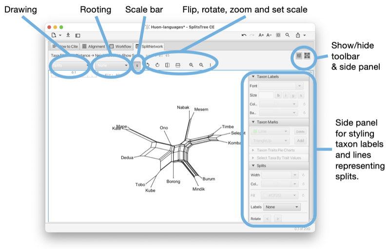
To reshape the layout of the network by rotating the edges associated with one or more selected splits, press-and-drag on the network.
The split-network tab has a toolbar and side panel that are hidden by default, but can be opened using two toggle buttons at the top right of the tab.
The toolbar provides a choice box to determine how to draw the splits. The choices are as a split network, to-scale or as a topology (with all edges of uniform length), or as a phylogenetic outline, again, either to-scale or as a topology (with all edges of uniform length). There is a second choice box to determine whether the network is to be drawn unrooted or rooted, using either mid-point rooting or outgroup rooting. The latter requires that some taxa have been selected; these are treated as the outgroup.
In addition, there are buttons for rotating, flipping, zooming and for setting the scale ratio to a specific value to ensure that different networks are drawn to the same scale. Use the rotate buttons to rotate the entire network.
The right side panel contains items for styling the taxon labels and for adding marks to the taxa. The line width can be set here. In addition, the line width and color can be set. The color of the inner area of an outline can be set. You can request to have the splits labeled by their weight, their confidence values (if available) or their internal split ids.
The Network tab shows a network (see Fig. 1.10). The network tab has a toolbar and side panel that are hidden by default, but can be opened using two toggle buttons at the top right of the tab.
The toolbar provides a choice box to determine how to draw the network. In addition, there are buttons for rotating, flipping and zooming.
The side panel contains items for styling the taxon labels and for adding marks to the taxa. The line width can be set here. In addition, there are items to determine which traits are to be shown in pie charts and whether to a legend. To change the colors used in pie charts, press on the items in the legend. These are then stored in the traits block in the TRAITCOLOR entry. Also, there is a menu button for determining how to represent character-state changes along an edge. The choices are has hatches (short marks), labels, compact labels and counts.
The World Map tab shows a map of the world and places any traits data that comes with latitude and longitude assignments on the map (see Fig. 1.11). To change the colors used in pie charts, press on the items in the legend. They are stored in the traits block in the TAXONCOLOR entry. The world tab has a toolbar and side panel, the latter is hidden by default, but can be opened using the toggle button at the top right of the tab.
This tab appears when the input data contains a traits block that has latitude and longitude specifications (see Section B.2).
There is a Show menu button to determine whether country names, continent names and/or oceans should appear as labels. There is a button to determine whether to show two copies of the map side-by-side for Pacific-centric data. There is a button to zoom to the shown haplotype data.
The workflow tab provides access to the workflow graph (see Fig. 1.12).
The workflow tab has a toolbar that contains a number of items, whose purpose and enabled state depends on which nodes in the workflow graph are currently selected.
The first toolbar item will open the corresponding algorithm, text display or view tab, depending on whether the selected node is an algorithm node, data node or view node. Double-clicking on a node has the same effect.
When a data node is selected, then the second toolbar item can be used to attach an additional algorithm to the data node.
When an algorithm node is selected, then the next two items can be used either to duplicate the analysis, or to delete it, respectively. Each algorithm node also carries a similar menu button.
There are two items for zooming in and out.
The How to cite tab provides a description of the data and algorithms used, and provides the necessary citations (see Fig. 1.13).
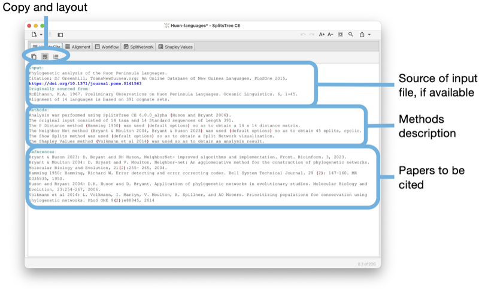
The toolbar of the input tab contains a button to copy the complete or selected content of the tab. There are buttons to turn line-wrapping and lines numbers on and off.
If the input is a Nexus or SplitsTree file that contains a comment at the beginning of the file describing the source of the data, then this will be reported at the top of the text area. This is followed by a description of the methods used. Finally, all suggested references are listed.
The Input editor tab provides an interactive editor for entering and parsing input data (see Fig. 1.14).
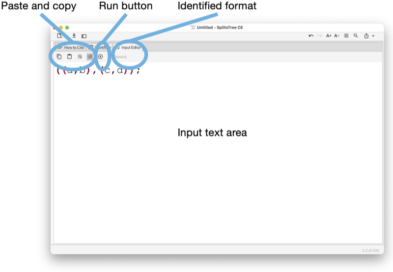
The toolbar of the input tab contains a button to copy the complete or selected content of the tab. There buttons to turn line-wrapping and lines numbers on and off.
The program will try to guess to which input format the entered text adheres to and will indicate the name of the format in the toolbar. When a valid format has been detected, then the run button will be enabled. Pressing the run button will parse the data and launch an analysis of the entered data.
The input editor can be opened from the File menu and is automatically open when the user imports a text or file into the program that is not in one of the recognized input formats.
Report tabs are used to present the results of analyses such as Tajima’ D, phylogenetic diversity or Shapely values as a text (see Fig. 1.15).
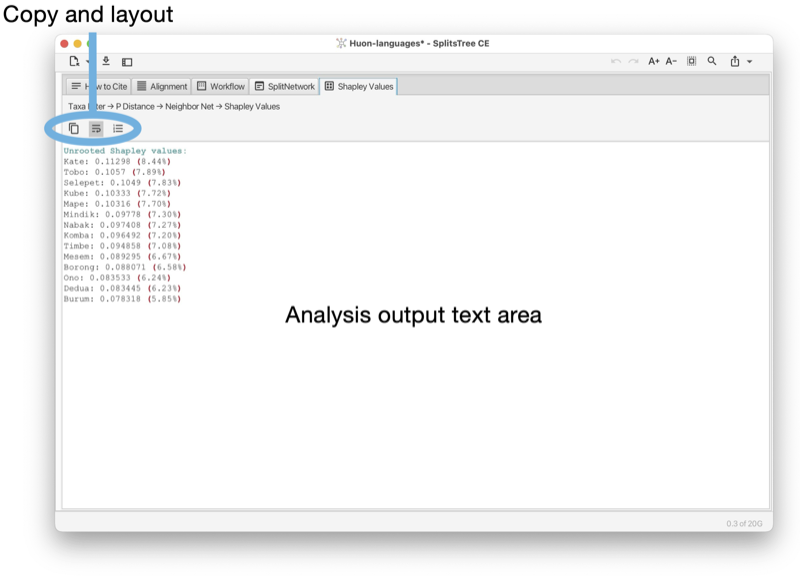
The toolbar of the report tab contains a button to copy the complete or selected content of the tab. There are buttons to turn line-wrapping and lines numbers on and off.
Text tabs are used to show the content of data blocks, in a choice of several different formats (see Fig. 1.16).
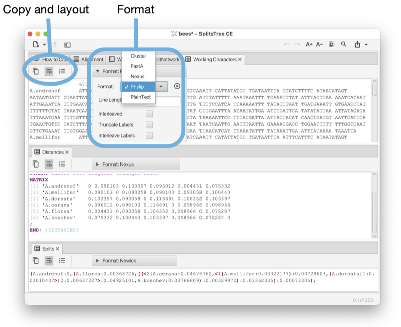
The toolbar of any text tab contains a button to copy the complete or selected content of the tab. There are buttons to turn line-wrapping and lines numbers on and off. There is a format pane that can be used to select the desired display format and to specify any options associated with the format.
Such a text tab can be opened by selecting a data node item in the sidebar and then pressing the show/edit button at the top of the sidebar, or by double-clicking on the item.
The sidebar (see Fig. 1.2) (figure part b) contains a representation of the workflow as a tree at the top, and the algorithms tab pane at the bottom (figure parts c,d).
The workflow tree view contains a representation of all input data, computed data and algorithms used in the computation. There are three types of nodes:
Double-clicking on a data node will open a text tab displaying the corresponding data, or analysis result, if the data block is a report. Double-clicking on an algorithm node will open the corresponding algorithm tab.
An algorithm tab has a run button (at the right) to execute the algorithm and may contain some optional input items (below) to set parameters of the algorithm.
The SplitsTree App supports the calculation of the phylogenetic context of a draft prokaryotic genome [Bagci et al., 2021]. One or more files (FastA format) each containing one or more sequences representing draft genomes (or metagenomic assembly bins) can be imported into the program and then compared against a set of GTDB reference genomes [Parks et al., 2018] using mash distances [Ondov et al., 2016] and then represented as a phylogenetic outline.
The dialog is opened using the File->Analyze Draft Genomes... menu item and is set up using three tabs, as shown in the Figure (see Fig. 1.17).
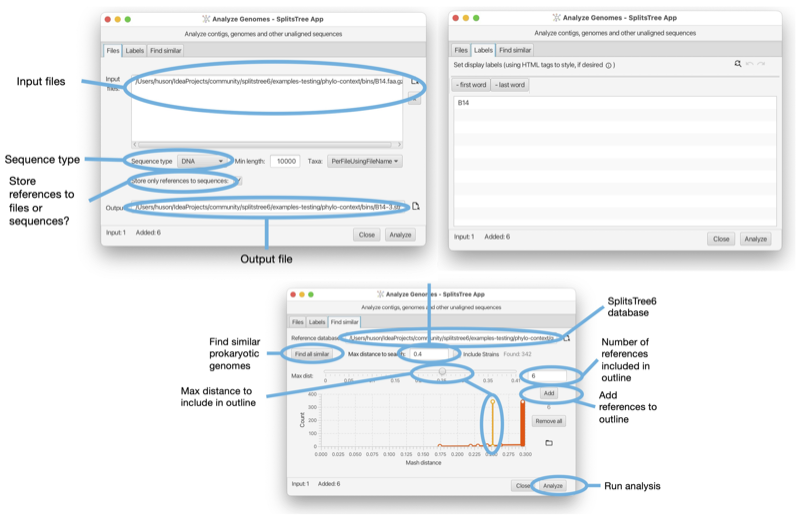
In SplitsTree4, data analysis was based on a simple linear sequence. To construct a Neighbor Net, for example, one might input character data, apply a transform to infer a distance matrix, apply another transform to produce the set of splits in the Neighbor Net and another transform for convert those splits into a network on the screen.
That simplicity came with limitations. For example, to compare the result of analyses using different parameters or distance methods it was necessary to duplicate the whole file and start again.
The SplitsTree App implements a far more sophisticated system for workflows. It is still straightforward to run a simple linear workflow as in SplitsTree4, but it is now possible to branch that workflow at any point, exploring alternative parameters or methods. The use of frames make it easy to view the results of different analyses side-by-side.
The branching structure of a document’s workflow can be viewed in the side panel (as a hierarchy) or in the workflow panel (as a graph). To illustrate, open the example file ungulates.nex which can be found in the directory publications/WelkerEtal2015 in the Examples directory. By default, the SplitsTree App creates a network by running Neighbor Net and using the p-distance. Switching to the workflow panel displays the (linear) workflow for this initial analysis (see Fig. 2.1).
In this graph, nodes correspond to algorithms (indicated by a icon) or data (indicated by an icon). From the algorithm nodes you can edit the parameters of the method. Selecting an algorithm node and clicking the delete button (top of pane) removes that node and any descendants of that node.
Suppose we want to compare a network computed by the Neighbor Net algorithm with a tree obtained using BioNJ. Assuming both are to be computed from the same distance matrix, we can select the corresponding node and choose BioNJ from the popup menu marked with a plus (either on the node or in the toolbar) (see Fig. 2.2). SplitsTree then constructs and displays the BioNJ tree. Switching back to the workflow panel we see that a new sequence of nodes has branched off the distances node, indicating the revised analysis.
This analysis also creates a new window tab. Right-click on a tab to get a context menu that allows you to split the main tab pane into two parts, then drag the tabs to the left or right panes to view both the Neighbor Net network and the BioNJ tree side-by-side.
SplitsTree implements four standard tree construction methods:
Each of these can be called from the Trees menu, or added as an algorithm in the workflow. There are several options for displaying trees, available by clicking on one of the two buttons on the right-hand-side of the tree window:
Given a distance matrix as input, the Neighbor Net algorithm operates in three stages. First, an agglomerative method is used to identify a circular ordering of the taxa. The splits computed by the algorithm are a subset of the set of all splits that can be formed from consecutive sets of taxa in that ordering. Second, a heavily customized algorithm is used to efficiently compute split weights. Those with zero weight are removed (use a split filter to remove splits with larger weight). Finally, a planar split network algorithm takes the weighted splits and produces the split network representation. A complete description of the entire process is available in Bryant and Huson [2023].
There is a single option available in Neighbor Net, the method used to infer split weights. We found that the Active Set method performed better than the other methods, and this is the default and recommended option. We have left the other algorithms as options in order to enable a repeat of the analysis in Bryant and Huson [2023].
When Neighbor Net is called, SplitsTree produces a split block and a split network block in the workflow. As we stress in Huson and Bryant [2006], the main information in the network is the set of weighted splits. Think of the network as a means of visualising the splits, in the sense that the same set of splits can be represented in several different ways.
To rotate or flip the entire network, use the toolbar revealed by pressing the preferences button at the top right of the split network panel, making sure that none of the nodes or edges in the network are selected (see Section 1.10).
Click on an edge in the split network to select that split. The edges associated to that split can be rotated using the rotate buttons in the toolbar or the arrows in the side panel which appears when you click the button on the right (see Fig. 2.4).
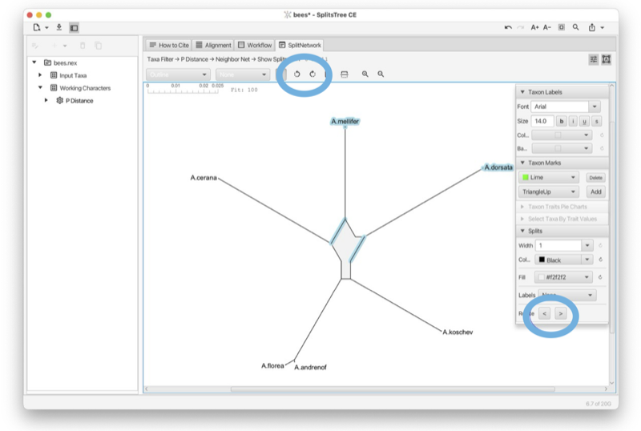
The traditional approach to displaying split networks marks out the splits with a mesh of quadrilaterals and polygons. The outline representation Bagci et al. [2021] constructs just the outer perimeter of the network. This is sufficient to represent all the split weights, and is generally much faster to compute and draw. To switch back and forward between the graph mode and the outline mode use the pop-up menu at the left of the toolbar (see Section 1.10).
Given a distance matrix, the Split Decomposition method [Bandelt and Dress, 1992] can be selected in the Network menu, or on a distances node in the workflow. Split Decomposition is a predecessor of Neighbor Net, though the structures of the two methods are quite different. Split Decomposition works by inferring a set of splits satisfying a quartet condition in the distance matrix. Split Decomposition produces a set of weakly compatible splits and, as such, can produce more complex split networks than those produced by Neighbor Net. The resulting split network will not necessarily be planar. In practice, the conservative nature of the selection criteria means that Split Decomposition produces far fewer splits than Neighbor Net.
SplitsTree includes several methods for extracting splits directly from character data. These methods do not assume any explicit model for sequence evolution. As such they do not correct for hidden mutations. However, they can reveal important structure within sequences from closely related organisms, as well as artefacts resulting from data handling problems.
The simplest is BinaryToSplits (see Section C.1), which applies to binary data only. Each binary character determines a split separating those with allele/state 0 and those with allele/state 1. The weight assigned to a split equals the summed weight for all characters inducing that split, defaulting to a count of those characters if weights are not specified. The BinaryToSplits algorithm is available via the workflow graph or workflow hierarchy. The user can specify a weight/count threshold on the splits, a cap on the maximum dimension of the split network (see Section C.3) and the option to include all ‘trivial’ splits separating one taxon from the remainder automatically.
The DNAtoSplits method (see Section C.1) carries out a similar analysis but on nucleotide data. Splits are either determined via an RY coding (AG vs CT) or by splitting the most frequent state (assumed ancestral) from the other states (assumed derived) at each site.
The Parsimony Splits method (see Section C.1), introduced by Bandelt and Dress [1992], produces a set of weakly compatible splits directly from character taxa. The method is quartet based, like Split Decomposition, but for each four taxa, it determines the two most frequent pairings of two taxa versus the other two taxa.
A haplotype network is an elegant and efficient way to represent character or sequence data. Each node corresponds to a particular sequence with the size of the node proportional to the number of copies of that sequence in the data. Sequences which differ in one position are connected by an edge which is (optionally) labelled by the exact difference. Different methods for constructing haplotype networks generate different graphs for connecting sequences at larger distances. For them all, a key property is that given one sequence, the network, and the mutations along each edge, the entire alignment can be reconstructed.
SplitsTree provides implementations of two widely-used haplotype network methods, MinSpanningNetwork [Excoffier and Smouse, 1994] and MedianJoining [Bandelt et al., 1999]. Haplotype networks are drawn as graphs with each edge labelled by marks indicating the number of mutations/differences along that edge. This can be modified using the side panel which appears when clicking the preferences button at the top right of the network panel.
A minimum spanning tree for a graph is a connected subgraph of minimum weight. Sometimes there is a unique minimum spanning tree; other times there are multiple.
In this context, the graph contains a node for each input sequence and edge between every pair of nodes. The length of each edge is the Hamming distance between the corresponding sequences. Other distance measures can be used, but the Hamming distance is appropriate for Haplotype Network construction.
The minimum spanning network is formed from all those edges in the graph which appear in every minimum spanning tree (see Section C.2).
A minimum spanning network is constructed from a characters block by first determining Hamming distances (right-click on the characters block and select Add Algorithm -> Hamming distance). Then right-click on the distance block produced and add the Min Spanning Network algorithm.
Median Joining (see Section C.1) is probably the most highly-cited method for constructing phylogenetic networks. The implementation in SplitsTree is based on the method described in Bandelt et al. [1999]. The Median-Joining network method makes repeated use of minimum spanning networks, each time augmenting the set of observed sequences with putative ancestral sequences.
A Median-Joining network is constructed from a characters block via the Network menu, or by adding an algorithm to the workflow. The method comes with a single option ϵ that is an integer controlling a threshold determining when two sequences are considered adjacent. In Bandelt et al. [1999], ϵ varies between 0, 1 and 2.
A haplotype network is a direct representation of the input data and a split network represents groupings or splits between taxa. Both are examples of so-called implicit or data-display networks that aim at visualizing evolutionary data. In contrast, an explicit network is a representation of the putative evolutionary history, including reticulate events such as speciation-by-hybridization or horizontal gene transfer.
Strictly speaking, unrooted phylogenetic trees, too, are implicit representations of evolutionary data, whereas rooted phylogenetic trees have a direction (away from the root) and this allows branching nodes to be explicitly interpreted as representing speciation events.
Explicit phylogenetic networks are necessarily rooted. The Autumn algorithm [Huson and Linz, 2018] (see Section C.4) produces an explicit rooted phylogenetic network in which reticulations may be interpreted as putative hybridization or HGT events. However, just because a phylogenetic tree has a root does not mean that it is explicit. For example, the Cluster Network algorithm (see Section C.4) takes as input a set of rooted trees and aims at displaying all their clusters as a rooted network (in the hardwired sense [Huson et al., 2012]). Here, the reticulate nodes do not have a direct biological interpretation.
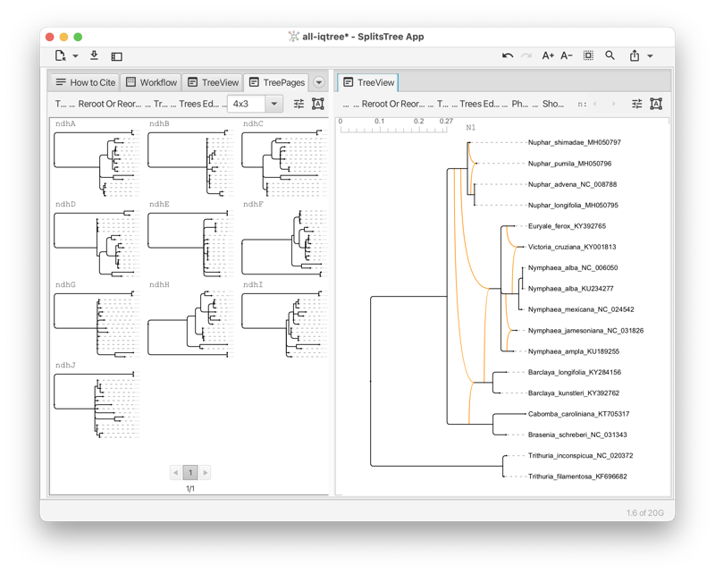
In mathematical phylogenetics, a hybrization network is a rooted phylogenetic network that contains or displays an input set of rooted phylogenetic trees. Usually, the requirement is that such a network minimizes the “hybridization number”, that is, the number of reticulations. (To be precise, a reticulation node of indegree k contributes k - 1 toward the hybridization number.)
SplitsTree currently offers two algorithms for computing such networks for real world data. The Autumn algorithm [Huson and Linz, 2018] (see Section C.4) takes as input two rooted phylogenetic trees and computes, as output the list of all different hybridization networks that contain the two trees. The input trees may have multifurcations and unequal taxon sets. This algorithm aims at providing an exact solution (networks that minimize the hybridization) of a computational hard problem, so it might not terminate if the input trees have too many conflicts.
The PhyloFusion algorithm [Zhang et al., 2023, 2024] takes as input multiple rooted trees and computes one or more rooted phylogenetic networks that display all the input trees. Again, we allow multifurcations and missing taxa. This very fast heuristic aims at minimizing the hybridization number. With this, we provide a versatile method for exploring the practical use of rooted networks in phylogenetics (see Section C.4) (see Fig. 2.5).
Assume that you have a collection of phylogenetic trees for which you would like to explore the use of rooted phylogenetic networks to represent them. To obtain a useful network, you must setup a pipeline consisting of several steps (see Fig. 2.6). In this analysis, incorrect edges are particularly harmful because they generate unnecessary reticulations and so it is important that the input trees have confidence values (such as bootstrap support values, say) associated with the edges so that low-confidence can be ignored.
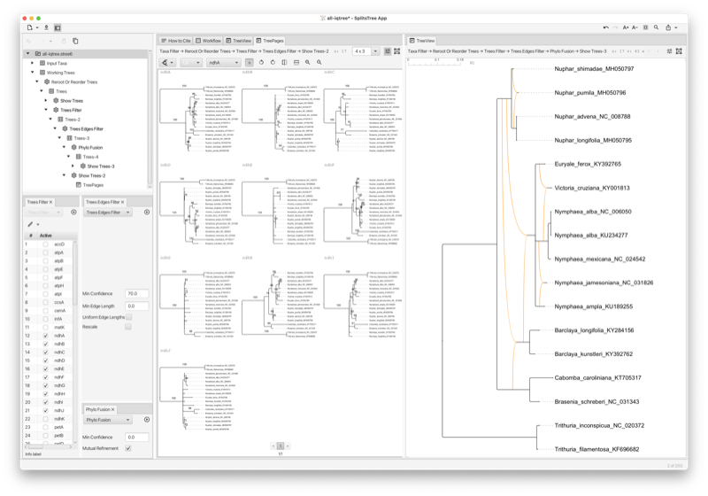
The Cluster Network algorithm extracts all clusters from an input set of rooted phylogenetic trees and computes a network using the cluster-popping algorithm [Huson et al., 2012]. This is a fast algorithm that provides a network that contains all input trees. However, it does not aim at minimizing the hybridization number.
The methods in this chapter all attempt to summarise information contained in a set of trees. (Most also work if the input contains rooted phylogenetic networks, in which case the calculations are based on “hardwired clusters” contained in the networks.) There are several possible sources:
One of the big improvements with the most recent version of SplitsTree is that the routines for reading in files of trees can now cope with large tree files or large trees.
A consensus method summarises a set of trees (on the same set of taxa) with a single tree. It can be thought of as analogous to an average tree or median tree.
The average consensus method implements an idea of Lapointe and Cucumel [1997]. Additive (leaf to leaf) distance matrices are constructed for each tree. This can take some time on larger files. The average of these matrices are then used to construct either a Neighbor-Joining tree or a NeighborNet.
The method can be called from the workflow by selecting a trees block and adding the algorithm ‘Average Consensus’ (see Section C.4). Alternatively, add an ‘Average Distances’ algorithm to the tree block. This creates a new distance block which can be output or analysed using a method of choice.
The strict consensus, majority rule consensus and greedy consensus are three of the oldest and most widely used consensus methods in phylogenetics.
These methods are available from the Trees menu in the menu bar or by adding an algorithm to the trees block in the workflow.
Note that there is a slight difference in the consensus tree depending on whether the input trees are to be considered rooted or unrooted. For example the two trees
| ((a,b),c,d) | and | (a,b,(c,d)); |
share a split ab|cd which would appear in their unrooted consensus tree, but they share no clusters, so their rooted consensus tree would be completely unresolved.
The densi-tree consensus [Bouckaert, 2010] shows the greedy consensus tree together with a rendering of all input trees (see Section 1.9).
Consensus networks are based on the idea of using split networks to represent more splits than can appear in a single tree Bandelt [1995], Holland et al. [2004]. They can be constructed using the menu command Network>Consensus network, or by adding an algorithm to a trees block in the workflow. Note that, with the menu command, if there is more than one trees block then SplitsTree will ask the user to select one.
SplitsTree implements several weighting methods for the splits. These are used to determine the split weights used in the output tree or network. A standard analysis consensus network analysis will use the frequency (or count) of a split as the weight used for selecting and displaying splits.
The threshold percent controls how many splits are included in the network. When the weight is computed from split counts it specifies the percentage of trees which a split needs to be contained in for the split to be included in the network. Reducing this threshold will increase the number of splits, giving a more complex network. The High Dimension Filter is the same as that used in the split weight filter (see Section C.3), greedily removing splits which generate high dimensional boxes in the diagram.
The consensus outline method (see Section C.4) takes as input a set of trees and produces as output a set of circular splits that are displayed either as a planar split network or as a phylogenetic outline. It operates by greedily selecting a subset of input splits that are compatible with some circular ordering of the input tree, computed using the PQ-tree algorithm [Booth and Lueker, 1976]. One possible application is as an alternative to the densi-tree visualization (see Fig. 3.1).
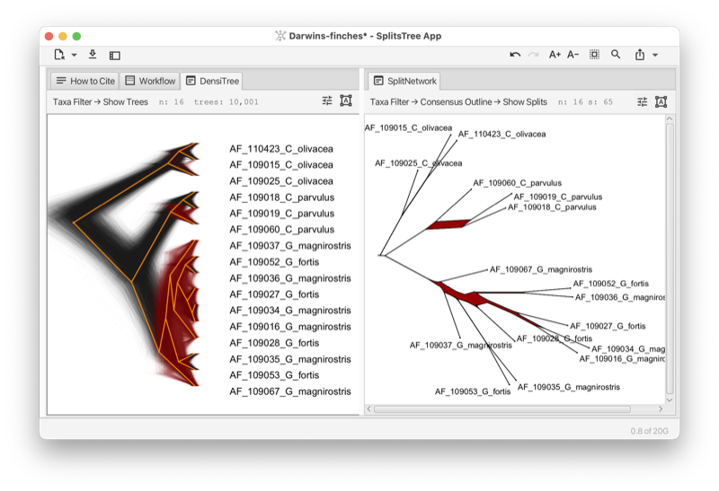
The idea behind a confidence network (see Section C.4) is to choose the threshold in a consensus network so that at least 95% of the trees have all their splits contained in that network. The method was originally designed as a way to create confidence intervals from bootstrap distributions Huson and Bryant [2006], however the dimensionality of the problem, and shortcomings of empirical bootstrap distributions, meant that the confidence sets produced were massive. The same machinery can be readily applied to samples from the posterior distribution of trees in a Bayesian analysis, in which case the network represents a confidence set.
The main option in a confidence network is the level, which is 0.95 by default. This is the proportion of input trees which will have their splits contained in the network. Decreasing this number produces smaller networks.
All functionality of the program can be used directly from the main window. In addition, the program provides menus to access the most often used features.
This menu has the following items:
This menu has the following items:
This menu has the following items:
This menu has the following items:
This menu has the following items:
This menu has the following items:
This menu has the following items:
This menu has the following items:
This menu has the following items:
This menu has the following items:
This menu has the following items:
SplitsTree is organized around data blocks that correspond to “Nexus” blocks [Maddison et al., 1997].
This block maintains the list of all taxa in the analysis. There is a fixed number (nTax) of taxa and each has an id 1..nTax and an unique label. Optionally, an info string can be provided for each taxon. Also, a display label may be provided for each taxon. This can include certain HTML tags that are used to render the label.
This block contains traits associated with the input taxa. Each trait has a label, optional latitude and longitude, and a value, which can either be a number or a string.
This block maintains a set of characters or a multiple sequence alignment. There is a fixed number of taxa and characters or positions. Several different formats are supported. Characters can have weights and both characters and their states can have labels.
This block maintains a distance matrix of size nTax times nTax.
This block maintains a list of trees. These can be rooted or unrooted phylogenetic trees, or rooted phylogenetic networks. Trees can partial in the sense that they need to contain all taxa.
This block maintains a set of splits, usually with weights, sometimes with confidence values, and usually with a suitable cycle for layout purposes.
Maintain a network, such as a haplotype network or just a set of points (for PCoA).
This block represents a viewer.
This block represents an algorithm.
This block represents a textual report.
This block represents a collection of taxon sets and/or character sets.
This block holds program-specific data and its presence in a file indicates that the file was generated by SplitsTree6 and represents a complete analysis.
This block represents a collection of genomes.
Here we list of all provided algorithms, organized by input data.
The P Distance algorithm takes a Characters block as input and produces a Distances block as output. It computes the normalized Hamming distance. The algorithm has the following options:
HandleAmbiguousStates = {Ignore | AverageStates | MatchStates} - choose how to handle ambiguous states (nucleotide data only)
The Hamming Distance algorithm takes a Characters block as input and produces a Distances block as output. It computes the Hamming distance, that is the number of differences between sequences The algorithm has the following options:
HandleAmbiguousStates = {Ignore | AverageStates | MatchStates} - choose how to handle ambiguous states (nucleotide data only)
The Log Det algorithm takes a Characters block as input and produces a Distances block as output. It computes distances using the Log-Det method. The algorithm has the following options:
PropInvariableSites = <Double> - proportion of invariable sites
FudgeFactor = <Boolean> - input missing matrix entries using LDDist method
FillZeros = <Boolean> - replace zeros with small numbers in rows/columns with values
The Jukes Cantor Distance algorithm takes a Characters block as input and produces a Distances block as output. It calculates distances under the Jukes-Cantor model. The algorithm has the following options:
PropInvariableSites = <Double> - proportion of invariable sites
SetSiteVarParams = {fromChars | defaultValues} - set site variation parameters to default values, or to estimations from characters
Reference: [Jukes and Cantor, 1969]
The K2P Distance algorithm takes a Characters block as input and produces a Distances block as output. It calculates distances under the Kimura-2P model. The algorithm has the following options:
TsTvRatio = <Double> - ratio of transitions vs transversions
Gamma = <Double> - alpha value for the Gamma distribution
PropInvariableSites = <Double> - proportion of invariable sites
SetSiteVarParams = {fromChars | defaultValues} - set site variation parameters to default values, or to estimations from characters
UseML_Distances = <Boolean> - use maximum likelihood estimation of distances (rather than exact distances)
The F81 Distance algorithm takes a Characters block as input and produces a Distances block as output. It calculates distances under the Felsenstein-81 model. The algorithm has the following options:
BaseFrequencies = <doubleArray> - base frequencies (in order ACGT/U)
SetBaseFrequencies = {fromChars | defaultValues} - set base frequencies to default values, or to estimations from characters (using Capture-recapture for invariable sites)
PropInvariableSites = <Double> - proportion of invariable sites
SetSiteVarParams = {fromChars | defaultValues} - set site variation parameters to default values, or to estimations from characters
UseML_Distances = <Boolean> - use maximum likelihood estimation of distances (rather than exact distances)
Reference: [Felsenstein, 1981]
The HKY85 Distance algorithm takes a Characters block as input and produces a Distances block as output. It calculates distances under the Hasegawa-Kishino-Yano model. The algorithm has the following options:
TsTvRatio = <Double> - ratio of transitions vs transversions
BaseFrequencies = <doubleArray> - base frequencies (in order ACGT/U)
SetBaseFrequencies = {fromChars | defaultValues} - set base frequencies to default values, or to estimations from characters (using Capture-recapture for invariable sites)
PropInvariableSites = <Double> - proportion of invariable sites
SetSiteVarParams = {fromChars | defaultValues} - set site variation parameters to default values, or to estimations from characters
Reference: [Hasegawa et al., 1985]
The F84 Distance algorithm takes a Characters block as input and produces a Distances block as output. It calculates distances under the Felsenstein-84 model. The algorithm has the following options:
BaseFrequencies = <doubleArray> - base frequencies (in order ACGT/U)
SetBaseFrequencies = {fromChars | defaultValues} - set base frequencies to default values, or to estimations from characters (using Capture-recapture for invariable sites)
PropInvariableSites = <Double> - proportion of invariable sites
SetSiteVarParams = {fromChars | defaultValues} - set site variation parameters to default values, or to estimations from characters
UseML_Distances = <Boolean> - use maximum likelihood estimation of distances (rather than exact distances)
Reference: [Felsenstein and Churchill, 1996]
The GTR Distance algorithm takes a Characters block as input and produces a Distances block as output. It calculates distances under the general time-reversible model. The algorithm has the following options:
PropInvariableSites = <Double> - proportion of invariable sites
SetSiteVarParams = {fromChars | defaultValues} - set site variation parameters to default values, or to estimations from characters
RateMatrix = <doubleSquareMatrix> - rate matrix for GTRDistance (in order ACGT/U)
UseML_Distances = <Boolean> - use maximum likelihood estimation of distances (rather than exact distances)
The Protein ML Distance algorithm takes a Characters block as input and produces a Distances block as output. It computes distances for proteins using maximum-likelihood estimation. The algorithm has the following options:
Model = {cpREV45 | Dayhoff | JTT | mtMAM | mtREV24 | pmb | Rhodopsin | WAG} - choose an amino acid substitution model
PropInvariableSites = <Double> - proportion of invariable sites
Gamma = <Double> - alpha parameter for gamma distribution. Negative gamma = Equal rates
Reference: [Swofford et al., 1996]
The Dice Distance algorithm takes a Characters block as input and produces a Distances block as output. It computes distances using the DiceDistance coefficient distance.
The Jaccard Distance algorithm takes a Characters block as input and produces a Distances block as output. It computes distances based on the JaccardDistance index.
The Gene Content Distance algorithm takes a Characters block as input and produces a Distances block as output. It computes distances based on the presence/absence of genes.
Reference: [Huson and Steel, 2004]
The Gene Sharing Distance algorithm takes a Characters block as input and produces a Distances block as output. It computes distances using the gene-sharing distance.
Reference: [Snel et al., 1997]
The Upholt Restriction Distance algorithm takes a Characters block as input and produces a Distances block as output. It calculates distances for restriction data.
The Nei Li Restriction Distance algorithm takes a Characters block as input and produces a Distances block as output. It calculates distances for restriction data.
Reference: [Nei and Li, 1979]
The Base Freq Distance algorithm takes a Characters block as input and produces a Distances block as output. It calculates distances from differences in the base composition.
The Binary To Splits algorithm takes a Characters block as input and produces a Splits block as output. It converts binary characters directly into splits. The algorithm has the following options:
MinSplitWeight = <Double> - minimum split weight threshold
HighDimensionFilter = <Boolean> - activate high-dimensional filter to avoid exponential graph size
AddAllTrivial = <Boolean> - ensure all trival splits are present
Reference: [Huson et al., 2012]
The DNA To Splits algorithm takes a Characters block as input and produces a Splits block as output. It converts DNA characters directly into splits. The algorithm has the following options:
Method = {MajorityState | RYAlphabet} - use either majority-state-vs-others or RY alphabet
MinSplitWeight = <Double> - minimum split weight threshold
HighDimensionFilter = <Boolean> - activate high-dimensional filter to avoid exponential graph size
Reference: [Huson et al., 2012]
The Median Joining algorithm takes a Characters block as input and produces a Network block as output. It computes a haplotype network using the median-joining method. The algorithm has the following options:
Epsilon = <Integer> - balances accuracy (smaller value) and efficiency (larger value)
Reference: [Bandelt et al., 1999]
The Parsimony Splits algorithm takes a Characters block as input and produces a Splits block as output. It computes weakly-compatible splits directly from DNA characters.
Reference: [Bandelt and Dress, 1992]
The Characters Filter algorithm takes a Characters block as input and produces a Characters block as output. It filter characters. The algorithm has the following options:
ExcludeGapSites = <Boolean> - exclude all sites that contain a gap
ExcludeParsimonyUninformativeSites = <Boolean> - exclude all sites that are parsimony uninformative
ExcludeConstantSites = <Boolean> - exclude all sites that are constant
ExcludeFirstCodonPosition = <Boolean> - exclude first and then every third site
ExcludeSecondCodonPosition = <Boolean> - exclude second and then every third site
ExcludeThirdCodonPosition = <Boolean> - exclude third and then every third site
The External Program algorithm takes a Characters block as input and produces a Trees block as output. It runs an external program. The algorithm has the following options:
Name = <String> - specify a name for this calculation
ProgramCall = <String> - specification of external program: replace ’path-to-program’ by path to program and
use ’%i’ and ’%o’ as place - holders for the program’s input and output files
CharactersFormat = {Phylip | Nexus | FastA} - specify the format to write out the current data in
The Estimate Invariable Sites algorithm takes a Characters block as input and produces a Report block as output. It estimates the proportion of invariant sites using capture-recapture.
Reference: [Steel et al., 2000]
The Phi Test algorithm takes a Characters block as input and produces a Report block as output. It performs a statistical test for detecting the presence of recombination.
Reference: [Bruen et al., 2006]
The Tajima D algorithm takes a Characters block as input and produces a Report block as output. It performs Tajima’s D test to determine whether a DNA sequence is evolving neutrally. The algorithm has the following options:
ExcludeGapSites = <Boolean> - exclude gapped sites from calculation.
The Neighbor Joining algorithm takes a Distances block as input and produces a Trees block as output. It computes an unrooted phylogenetic tree using the neighbor-joining method.
Reference: [Saitou and Nei, 1987]
The Bio NJ algorithm takes a Distances block as input and produces a Trees block as output. It computes an unrooted phylogenetic tree using the Bio-NJ method.
The UPGMA algorithm takes a Distances block as input and produces a Trees block as output. It computes a rooted phylogenetic tree using the UPGMA method.
Reference: [Sokal and Michener, 1958]
The Neighbor Net algorithm takes a Distances block as input and produces a Splits block as output. It computes a set of cyclic splits using the neighbor-net method. The algorithm has the following options:
InferenceAlgorithm = {GradientProjection | ActiveSet | APGD | SplitsTree4} - the inference algorithm to be used
References: [Bryant and Moulton, 2004, Bryant and Huson, 2023]
The Split Decomposition algorithm takes a Distances block as input and produces a Splits block as output. It computes a set of weakly-compatible splits using the split-decomposition method.
Reference: [Bandelt and Dress, 1992]
The Buneman Tree algorithm takes a Distances block as input and produces a Splits block as output. It computes a set of compatible splits using the Buneman tree method.
Reference: [Bandelt and Dress, 1992]
The Min Spanning Network algorithm takes a Distances block as input and produces a Network block as output. It computes a minimum spanning network. The algorithm has the following options:
Epsilon = <Double> - weighted genetic distance measure. Low: MedianJoining, High: full median network
MinSpanningTree = <Boolean> - calculate minimum spanning tree
Reference: [Excoffier and Smouse, 1994]
The Min Spanning Tree algorithm takes a Distances block as input and produces a Trees block as output. It computes a minimum spanning tree.
Reference: [Excoffier and Smouse, 1994]
The PCOA algorithm takes a Distances block as input and produces a Network block as output. It performs principal coordinates analysis. The algorithm has the following options:
FirstCoordinate = <Integer> - choose principal component for the x Axis
SecondCoordinate = <Integer> - choose principal component for the y Axis
The Delta Score algorithm takes a Distances block as input and produces a Report block as output. It calculates the delta score.
Reference: [Holland et al., 2002]
The Bootstrap Splits algorithm takes a Splits block as input and produces a Splits block as output. It performs bootstrapping on splits. The algorithm has the following options:
Replicates = <Integer> - number of bootstrap replicates
MinPercent = <Double> - minimum percentage support for a split to be included
ShowAllSplits = <Boolean> - show all bootstrap splits, not just the original splits
RandomSeed = <Integer> - if non-zero, is used as seed for random number generator
HighDimensionFilter = <Boolean> - heuristically remove splits causing high-dimensional network
Reference: [Felsenstein, 1985]
The Greedy Tree algorithm takes a Splits block as input and produces a Trees block as output. It produces a phylogenetic tree based on greedily selecting a compatible set of splits.
Reference: [Huson et al., 2012]
The Dimension Filter algorithm takes a Splits block as input and produces a Splits block as output. It heuristically remove splits that lead to high-dimensional boxes in a split network. The algorithm has the following options:
MaxDimension = <Integer> - heuristically remove splits that create configurations of a higher dimension than this threshold
The Show Splits algorithm takes a Splits block as input and produces a View block as output. It provides interactive visualizations of split networks. The algorithm has the following options:
View = {SplitNetwork} - the type of splits viewer to use
The Splits Filter algorithm takes a Splits block as input and produces a Splits block as output. It filter splits. The algorithm has the following options:
WeightThreshold = <Float> - set minimum split weight threshold
ConfidenceThreshold = <Float> - set the minimum split confidence threshold
MaximumDimension = <Integer> - set maximum dimension threshold (necessary to avoid computational overload)
FilterAlgorithm = {None | GreedyCompatible | GreedyCircular | GreedyWeaklyCompatible | BlobTree} - set the filter algorithm
RecomputeCycle = <Boolean> - recompute circular ordering
The Weights Slider algorithm takes a Splits block as input and produces a Splits block as output. It allows one to interactively filter splits by their weight. The algorithm has the following options:
WeightThreshold = <Double> - set minimum split weight threshold
The Incompatibility Score algorithm takes a Splits block as input and produces a Report block as output. It calculates an incompatibility score on splits.
The Phylogenetic Diversity algorithm takes a Splits block as input and produces a Report block as output. It calculates the phylogenetic diversity for selected taxa.
Reference: [Volkmann et al., 2014]
The Shapley Values algorithm takes a Splits block as input and produces a Report block as output. It calculates Shapley values on splits.
Reference: [Volkmann et al., 2014]
The Autumn Algorithm algorithm takes a Trees block as input and produces a Trees block as output. It computes all minimum hybridization networks using the Autumn algorithm The algorithm has the following options:
FirstTree = <Integer> - index of the first tree
SecondTree = <Integer> - index of the second tree
OnlyOneNetwork = <Boolean> - report only one network
RerootToMinimize = <Boolean> - reroot input trees to minimize hybridization number
Reference: [Huson and Linz, 2018]
The Phylo Fusion algorithm takes a Trees block as input and produces a Trees block as output. It combines multiple rooted phylogenetic trees into a rooted network. The algorithm has the following options:
OnlyOneNetwork = <Boolean> - report only one network
MutualRefinement = <Boolean> - mutually refine input trees
NormalizeEdgeWeights = <Boolean> - normalize input edge weights
SearchHeuristic = {Thorough | Medium | Fast} - fast, Medium, or Thorough search
GroupNonSeparated = <Boolean> - improve performance by grouping taxa that are not separated by a non-trivial edge
CladeReduction = <Boolean> - improve performance using clade reduction
References: [Zhang et al., 2023, 2024]
The Average Consensus algorithm takes a Trees block as input and produces a Splits block as output. It calculates average consensus tree.
Reference: [Lapointe and Cucumel, 1997]
The Blob Tree algorithm takes a Trees block as input and produces a Trees block as output. It extract the blob tree from a rooted network The algorithm has the following options:
SeparateBlobs = <Boolean> - for any blob that shares its top node with some other blob, insert an edge above it to keep blobs separate
Reference: [Huson et al., 2012]
The Bootstrap Tree Splits algorithm takes a Trees block as input and produces a Splits block as output. It performs bootstrapping on trees. The algorithm has the following options:
Replicates = <Integer> - number of bootstrap replicates
MinPercent = <Double> - minimum percentage support for a split to be included
ShowAllSplits = <Boolean> - show all bootstrap splits, not just the original splits
RandomSeed = <Integer> - if non-zero, is used as seed for random number generator
HighDimensionFilter = <Boolean> - heuristically remove splits causing high-dimensional network
Reference: [Felsenstein, 1985]
The Bootstrap Tree algorithm takes a Trees block as input and produces a Trees block as output. It performs bootstrapping on trees. The algorithm has the following options:
Replicates = <Integer> - number of bootstrap replicates
TransferBootstrap = <Boolean> - use transform bootstrapping (TBE), less susceptible to rouge taxa
MinPercent = <Double> - minimum percentage support for a branch to be included
RandomSeed = <Integer> - if non-zero, is used as seed for random number generator
Reference: [Felsenstein, 1985]
The Cluster Network algorithm takes a Trees block as input and produces a Trees block as output. It computes the cluster network that contains all input trees (in the hardwired sense). The algorithm has the following options:
EdgeWeights = {Mean | Count | Sum | Uniform} - compute edge weights
ThresholdPercent = <Double> - minimum percentage of trees that a cluster must appear in
Reference: [Huson and Rupp, 2008]
The Consensus Tree algorithm takes a Trees block as input and produces a Trees block as output. It provides several methods for computing a consensus tree. The algorithm has the following options:
Consensus = {Majority | Greedy | Strict} - consensus method to use
The Consensus Network algorithm takes a Trees block as input and produces a Splits block as output. It computes the consensus network. The algorithm has the following options:
EdgeWeights = {Mean | TreeSizeWeightedMean | Median | Count | Sum | Uniform | TreeNormalizedSum} - how to calculate edge weights in resulting network
ThresholdPercent = <Double> - threshold for percent of input trees that split has to occur in for it to appear in the output
HighDimensionFilter = <Boolean> - heuristically remove splits causing high-dimensional consensus network
Reference: [Holland et al., 2004]
The Consensus Outline algorithm takes a Trees block as input and produces a Splits block as output. It computes the consensus outline. The algorithm has the following options:
EdgeWeights = {Mean | TreeSizeWeightedMean | Median | Count | Sum | Uniform | TreeNormalizedSum} - how to calculate edge weights in resulting network
ThresholdPercent = <Double> - threshold for percent of input trees that split has to occur in for it to appear in the output
Reference: [Huson and Cetinkaya, 2023]
The Consensus Splits algorithm takes a Trees block as input and produces a Splits block as output. It provides several consensus methods. The algorithm has the following options:
Consensus = {Strict | Majority | GreedyCompatible | ConsensusOutline | GreedyWeaklyCompatible | ConsensusNetwork} - consensus method
EdgeWeights = {Mean | TreeSizeWeightedMean | Median | Count | Sum | Uniform | TreeNormalizedSum} - how to calculate edge weights in resulting network
ThresholdPercent = <Double> - threshold for percent of input trees that split has to occur in for it to appear in the output
HighDimensionFilter = <Boolean> - heuristically remove splits causing high-dimensional consensus network
Reference: [Huson et al., 2012]
The Filtered Super Network algorithm takes a Trees block as input and produces a Splits block as output. It computes a super network using the Z-closure method. The algorithm has the following options:
MinNumberTrees = <Integer> - set the min number trees
MaxDistortionScore = <Integer> - set the max distortion score
UseTotalScore = <Boolean> - set the use total score
Reference: [Whitfield et al., 2008]
The LSA Tree algorithm takes a Trees block as input and produces a Trees block as output. It extract the LSA tree from a rooted network.
Reference: [Huson et al., 2012]
The Normalize Rooted Networks algorithm takes a Trees block as input and produces a Trees block as output. It the Normalize Rooted Networks algorithm
Reference: [Francis et al., 2021]
The Rooted Consensus Tree algorithm takes a Trees block as input and produces a Trees block as output. It provides several methods for computing a rooted consensus tree. The algorithm has the following options:
Consensus = {Majority | Strict | Greedy} - consensus method to use
The Reroot Or Reorder Trees algorithm takes a Trees block as input and produces a Trees block as output. It reroot or reorder all trees. The algorithm has the following options:
RootBy = {Off | MidPoint | OutGroup} - determine how to reroot
RearrangeBy = {Off | RotateChildren | RotateSubTrees | ReverseChildren | ReverseSubTrees} - determine how to rearrange
Reorder = {Off | ByTaxa | Lexicographically | ReverseOrder | LadderizedUp | LadderizedDown | LadderizedRandom | Stabilize} - determine how to reorder
Rescale = <Boolean> - rescale each tree to total length of 100
The Show Trees algorithm takes a Trees block as input and produces a View block as output. It provides several types of interactive visualizations of trees. The algorithm has the following options:
View = {TreeView | TreePages | Tanglegram | DensiTree} - the type of viewer to use
The Super Network algorithm takes a Trees block as input and produces a Splits block as output. It computes a super network using the Z-closure method. The algorithm has the following options:
EdgeWeights = {AverageRelative | Mean | TreeSizeWeightedMean | Sum | Min | None} - determine how to calculate edge weights in resulting network
SuperTree = <Boolean> - enforce the strong induction property, which results in a super tree
NumberOfRuns = <Integer> - number of runs using random permutations of the input splits
ApplyRefineHeuristic = <Boolean> - apply a simple refinement heuristic
Seed = <Integer> - set seed used for random permutations
HighDimensionFilter = <Boolean> - heuristically remove splits causing high-dimensional network
Reference: [Huson et al., 2004]
The Trees Filter algorithm takes a Trees block as input and produces a Trees block as output. It filter trees.
The Trees Filter More algorithm takes a Trees block as input and produces a Trees block as output. It filter trees. The algorithm has the following options:
RequireAllTaxa = <Boolean> - keep only trees that have the full set of taxa
MinNumberOfTaxa = <Integer> - keep only trees that have at least this number of taxa
MinTotalTreeLength = <Double> - keep only trees that have at least this total length
The Trees Edges Filter algorithm takes a Trees block as input and produces a Trees block as output. It filter edges in trees. The algorithm has the following options:
MinConfidence = <Double> - keep only edges that have this minimum confidence value
MinEdgeLength = <Double> - keep only edges that have this minimum length
UniformEdgeLengths = <Boolean> - change all edge weights to 1
Rescale = <Boolean> - rescale each tree to total length of 100
The Tree Selector algorithm takes a Trees block as input and produces a Trees block as output. It select a tree to use. The algorithm has the following options:
Which = <Integer> - which tree to use
The Tree Selector Splits algorithm takes a Trees block as input and produces a Splits block as output. It selects a single tree and extracts its splits. The algorithm has the following options:
Which = <Integer>
The Unique Topologies algorithm takes a Trees block as input and produces a Trees block as output. It filters trees or rooted networks returning all unique topologies (using hardwired clusters). The algorithm has the following options:
Unrooted = <Boolean> - ignore location of root
The Confidence Network algorithm takes a Trees block as input and produces a Splits block as output. It computes a credibility network using Beran’s algorithm. The algorithm has the following options:
Level = <Double> - set the level (between 0 and 1)
HighDimensionFilter = <Boolean> - heuristically remove splits causing high-dimensional consensus network
Reference: [Huson and Bryant, 2006]
The Phylogenetic Diversity algorithm takes a Trees block as input and produces a Report block as output. It calculates the phylogenetic diversity for selected taxa. The algorithm has the following options:
Rooted = <Boolean> - interpret trees as rooted?
ApplyTo = {OneTree | AllTrees} - determine whether to apply to one or all trees
WhichTree = <Integer> - the index of the tree that the method will be applied to
The Robinson Foulds Distances algorithm takes a Trees block as input and produces a Report block as output. It calculates the Robinson-Foulds distance between each pair of trees The algorithm has the following options:
Normalize = <Boolean> - normalized distances
Reference: [?]
The Tree Diversity Index algorithm takes a Trees block as input and produces a Report block as output. It calculates the fair-proportion and equal-splits values on trees. The algorithm has the following options:
Method = {FairProportions | EqualSplits} - choose the type of index calculation
ApplyTo = {OneTree | AllTrees} - determine whether to apply to one or all trees
WhichTree = <Integer> - the index of the tree that the method will be applied to
References: [Redding, 2003, Redding and Mooers, 2006]
The Unrooted Shapley Values algorithm takes a Trees block as input and produces a Report block as output. It calculates unrooted Shapley values on trees. The algorithm has the following options:
ApplyTo = {OneTree | AllTrees} - determine whether to apply to one or all trees
WhichTree = <Integer> - the index of the tree that the method will be applied to
Reference: [Haake et al., 2008]
The Average Distances algorithm takes a Trees block as input and produces a Distances block as output. It calculates the average distances between taxa over a set of trees.
Reference: [Lapointe and Cucumel, 1997]
The Enumerate Contained Trees algorithm takes a Trees block as input and produces a Trees block as output. It enumerates all contained trees. The algorithm has the following options:
RemoveDuplicates = <Boolean> - suppress duplicate trees in output
The Loose And Lacy algorithm takes a Trees block as input and produces a Trees block as output. It computes the ‘loose’ and ‘lacy’ species for a given tree and taxon trait. The algorithm has the following options:
SpeciesDefinition = {Loose | Lacy | Both} - species definition to use
TraitNumber = <Integer> - number of specific trait to use
UseAllTraits = <Boolean> - use all traits
Reference: [Hoppe et al., 2019]
The List One RSPR Trees algorithm takes a Trees block as input and produces a Report block as output. It determines which trees are exactly on rSPR away from each other. The algorithm has the following options:
ApplyTo = {OneTree | AllTrees} - determine whether to apply to one or all trees
WhichTree = <Integer> - the index of the tree that the method will be applied to
The Show Network algorithm takes a Network block as input and produces a View block as output. It provides interactive visualizations of networks. The algorithm has the following options:
View = {Network | Text} - the type of network viewer to use
The program support several widely-used import and export formats.
Can import characters data in the following formats: FastA, MSF, Stockholm, Nexus, Phylip.
Can import distances data in the following formats: Nexus, Phylip, CSV.
Can import trees data in the following formats: Newick, Nexml, Nexus.
Can import splits data in the following formats: Newick, Nexus.
Can import network data in the following formats: Nexus.
Can import genomes data in the following formats: Nexus.
Can export taxa data in the following formats: Nexus.
Can export characters data in the following formats: Clustal, FastA, Nexus, Phylip.
Can export distances data in the following formats: Nexus, Phylip.
Can export trees data in the following formats: NeXML, Newick, Nexus.
Can export splits data in the following formats: FastA, Newick, Nexus.
Can export network data in the following formats: Nexus.
Can export genomes data in the following formats: Nexus.
Can export view data in the following formats: GML, Nexus.
Taxon display labels can be imported from a text file. Each line of the file must contain two tab-separated entries. The first entry is the taxon name, as used in the input data, and the second entry is the corresponding display label, which may contain HTML formatting.
Here is an example. The first label has font size 24 and text color blue. The second label is shown in bold. The remaining four labels have a yellow background.
Traits can be imported from a text file. The first line of the file must define the names of the traits. The line must start with the keyword Traits and then must contain a list of the names of the different traits, separated by tabs
Then there must be one line for each taxon. The first entry must be the taxon name and this must be followed by one value for each of the listed traits, separated by tabs.
Here is an example defining five traits, Europe to America, for seven taxa seq_1 to seq_7. In this case, the trait values are counts.
The second line starting with the key word Coordinates is optional. When present, it provides the latitude and longitude associated with each trait.
The program also supports a second way of specifying taxon-trait associations. After specifying the first (one or two) lines, the taxon-trait counts can also be specified by listing a taxon, a trait and then the desired count, like this:
SplitsTree is designed around the concept of a workflow. This is a provenance graph in which nodes explicitly represent data blocks and algorithms.
The graph is displayed the workflow tab (see Section 1.13) and is also presented in the sidebar (see Section 1.18). While the casual user will use menu items to set up and change the graph (without being aware of the graph), a user more familiar with the program will use controls in the workflow tab and sidebar to explicitly add, delete, duplicate or modify nodes and edges in the workflow graph.
Each main window contains one workflow and the workflow represents one input dataset, all applied algorithms and derived data.
In more detail, the graph is a tree with two root nodes (see Fig. E.1).
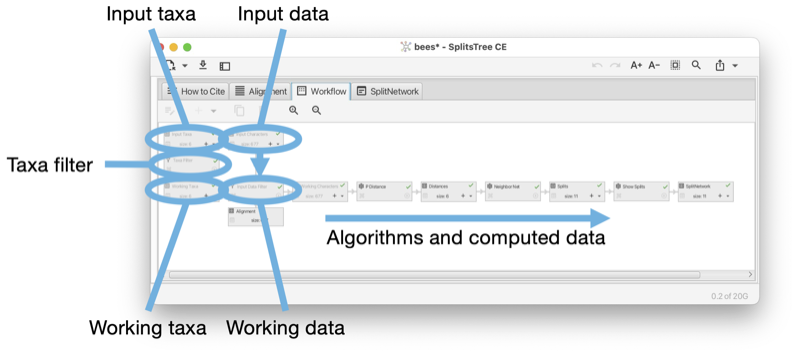
The first root node represents the set of input taxa. The number of input taxa is fixed and each taxon has a unique name (a label that does not contain special characters such as a single or double quote and must not be a number.) In addition, each taxon can have a display label, which may contain certain HTML commands, that is used to draw the label associated with the taxon.
The second root node represents the input data. This may be a set of characters (or sequence alignment), a distance matrix, a collection of trees (or rooted networks), or a set of splits.
The input-taxa node has one child, the taxa filter node. This can be used to remove some of the input taxa. This node has one child that contains the set of working taxa. This node represents the set of taxa that are actually used in all computations.
The input data node has one child that contains the working data. The data associated with this node is copied from the input data node, removing any taxa that have been deactivated using the taxa filter node.
All calculations undertaken in the program are based on the set of working taxa and the working data.
If the input data is character data (or a multiple sequence alignment), then the input data is displayed in the alignment tab (see Section 1.5) and controls associated with the tab allow the user to add or remove taxa in the same manner as when using the taxa filter.
The taxa filter also allows the user to edit the display labels associated with taxa.
The workflow contains two main types of nodes, algorithm nodes and data nodes. The workflow is a bipartite graph: data nodes only have algorithm nodes as children and vice versa (see Fig. E.2).
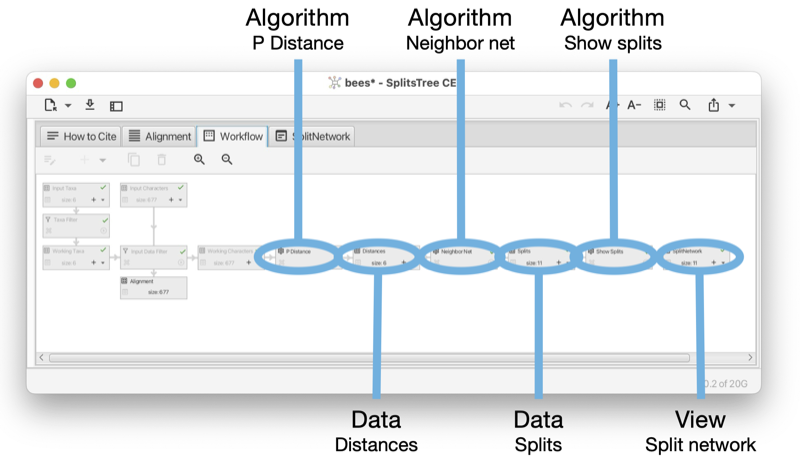
In the Figure (see Fig. E.1) it looks like the input data node and working data node are directly connected to each other. However, actually there is a special algorithm node between the two that facilitates the filtering of data when the taxa filter is used. As this node is only used internally, it is not displayed in the workflow tab or sidebar.
Each algorithm node computes data that is based on to a data node, while each data node is provided with the set of working taxa and one parental data node to work with. (Some algorithms, such as those that perform bootstrapping, additionally access other ancestral nodes to perform their calculations.)
The final nodes of the workflow (leaves) are always data nodes and each is of one of two special kinds. First, there are view nodes that represent the graphical visualization of trees or networks. Second, there are reporter nodes that are used to present the textual output of a calculation, such as the computation of Tajima’s D.
An algorithm node can represent one of several algorithms, depending on the type of input data and output data. For example, there are three algorithms that take as input a distance matrix and produce, as output, a set of splits, namely neighbor-net, split decomposition and the Buneman tree algorithm. In the Figure (see Fig. E.3) we show such an algorithm node and the controls associated with it.
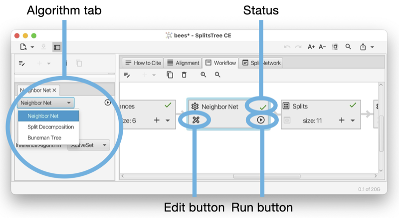
A data node usually represents a block of data, which can be either characters (aligned sequences), a distance matrix, a set of splits, a collection of trees (and/or rooted networks) or a haplotype network (see Fig. E.4). A view node is a data node that corresponds to a viewer for trees or networks.
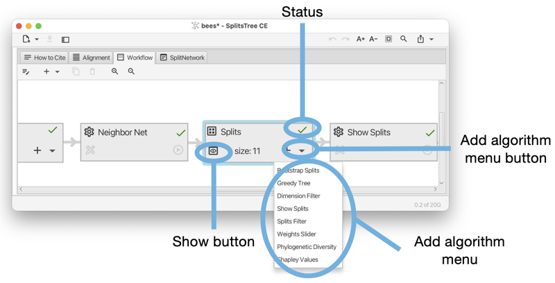
When saving a document, the workflow, including all input data and computed data, are saved to a file to be opened later. Such a full file has file suffix .stree6.
In addition, using the File->Export->Workflow... menu item, the user can save just the workflow graph, without the current data, to a file. Such a workflow file has file suffix .wflow6.
A saved workflow can be reopened in SplitsTree and data can then be loaded using the File->Replace Data... menu item.
To run an analysis on multiple datasets, the SplitsTree packages comes with a commandline tool called run-workflow, located in the tools directory. The basic idea is as follows. First, use SplitsTree to interactively set up the desired analysis. Then save export the workflow to a file(see Section E.3). Then use the run-workflow program to apply the workflow to multiple datasets.
The program is configured using a number of commandline options, to set the workflow file, to set the input data files, to set the output file or files, and to determine what should be written to the output.
Here is a synopsis of the program:
Here is a summary of the most important options:
In SplitsTree, each taxon is represented by a unique label. These labels are specified in the input taxa block. In addition to these labels, the taxon block may also contain a set of “display labels”, one for each taxon. If provided, the display labels are used in drawings of trees and networks. Display labels can be styled using a set HTML tags. There are several ways to do this:
Here is a list of all supported HTML tags, most are standard HTML, a few are specific to SplitsTree:
HTML numerical codes can be used to specify characters.
In the Figure (see Fig. F.1) a display label has been set for each taxon (except for A. Andrenof). Using HTML, the display labels include a Wikipedia image of the represented species of bees. In addition, the display label editor is shown open for A. Koschev. The display label contains HTML tags for italics and a tag to start a superscript. The HTML entity † is used to display a dagger.
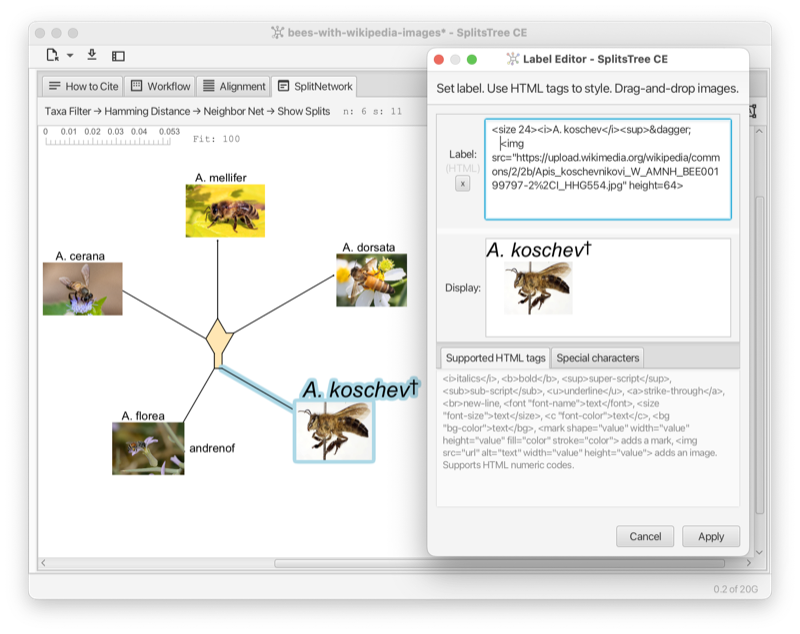
We thank Daria Evseeva for working on the code with us. This program uses the JAMA library in the neighbor-net algorithm.
C. Bagci, D. Bryant, B. Cetinkaya, and DH Huson. Microbial phylogenetic context using phylogenetic outlines. Genome Biology and Evolution, 13(9), 2021.
H-J Bandelt. Combination of data in phylogenetic analysis. In Systematics and Evolution of the Ranunculiflorae, pages 355–361. Springer, 1995.
HJ Bandelt and AWM Dress. A canonical decomposition theory for metrics on a finite set. Advances in Mathematics, 92:47–105, 1992.
HJ Bandelt, P. Forster, and A. Rhl. Median-joining networks for inferring intraspecific phylogenies. Molecular Biology and Evolution, 16:37–48, 1999.
K. S. Booth and G. S. Lueker. Testing for the consecutive ones property, interval graphs, and graph planarity using pq-tree algorithms. Journal of Computer and System Sciences, 13(3):335–379, 1976.
RR Bouckaert. Densitree: making sense of sets of phylogenetic trees. Bioinformatics, 26(1):1372–1373, 2010.
TC Bruen, H. Philippe, and D. Bryant. A simple and robust statistical test for detecting the presence of recombination. Genetics, 173:2665–2681, 2006.
D. Bryant. A classification of consensus methods for phylogenetics. In Bioconsensus, 2001.
D. Bryant and D. H. Huson. NeighborNet–improved algorithms and implementation. Frontiers in Bioinformatics, 2023.
D. Bryant and V. Moulton. Neighbor-net: An agglomerative method for the construction of phylogenetic networks. Molecular Biology and Evolution, 21(2):255–265, 2004.
C. Scornavacca D. H. Huson. Dendroscope 3: An interactive tool for rooted phylogenetic trees and networks. Systematic Biology, 61(6):1061–1067, 2012.
LR Dice. Measures of the amount of ecologic association between species. Ecology, 26(3):297–302, 1945.
Andreas W M Dress and Daniel H Huson. Constructing splits graphs. IEEE/ACM Transactions on Computational Biology and Bioinformatics, 1(3):109–115, 2004.
L. Excoffier and PE Smouse. Using allele frequencies and geographic subdivision to reconstruct gene trees within a species: molecular variance parsimony. Genetics, 136(1):343–359, 1994.
DP Faith. Conservation evaluation and phylogenetic diversity. Biological Conservation, 61:1–10, 1992.
J. Felsenstein. Evolutionary trees from DNA sequences: a maximum likelihood approach. Journal of Molecular Evolution, 17(6):368–376, 1981.
J. Felsenstein. Confidence limits on phylogenies: an approach using the bootstrap. Evolution, 39(4):783–791, 1985.
J. Felsenstein and GA Churchill. A hidden markov model approach to variation among sites in rate of evolution, and the branching order in hominoidea. Molecular Biology and Evolution, 13(1):93–104, 1996.
A. Francis, D.H. Huson, and M.A. Steel. Normalising phylogenetic networks. Molecular Phylogenetics and Evolution, 163, 2021.
O. Gascuel. BIONJ: an improved version of the nj algorithm based on a simple model of sequence data. Molecular Biology and Evolution, 14:685–695, 1997.
JC Gower. Some distance properties of latent root and vector methods used in multivariate analysis. Biometrika, 53(3-4):325–338, 1966.
M. Gruenstaeudl. Why the monophyly of nymphaeaceae currently remains indeterminate: an assessment based on gene-wise plastid phylogenomics. Plant Systematics and Evolution, 305:827–836, 2019.
CJ Haake, A. Kashiwada, and FE Su. The Shapley value of phylogenetic trees. J Math Biol, 56:479–497, 2008.
RW Hamming. Error detecting and error correcting codes. Bell System Technical Journal, 29(2):147–160, 1950.
M. Hasegawa, H. Kishino, and T. Yano. Dating of human-ape splitting by a molecular clock of mitochondrial DNA. Journal of Molecular Evolution, 22(2):160–174, 1985.
BR Holland, KT Huber, AWM Dress, and V. Moulton. Delta plots: A tool for analyzing phylogenetic distance data. Molecular Biology and Evolution, 19(12):2051–2059, 2002.
BR Holland, KT Huber, and Vincent PJ Lockhart V. Moulton. Using Consensus Networks to Visualize Contradictory Evidence for Species Phylogeny. Molecular Biology and Evolution, 21(7):1459–1461, 2004.
A. Hoppe, S. Tuerpitz, and MA Steel. Species notions that combine phylogenetic trees and phenotypic partitions. Journal of Mathematical Biology, 78:117–134, 2019.
Daniel H. Huson. Displacement optimized tanglegrams for rooted phylogenetic trees and networks. In preparation, 2025.
Daniel H. Huson and David Bryant. The splitstree app: interactive analysis and visualization using phylogenetic trees and networks. Nature Methods, 2024. URL https://doi.org/10.1038/s41592-024-02406-3.
DH Huson and D Bryant. Application of phylogenetic networks in evolutionary studies. Molecular Biology and Evolution, 23(2):254–267, 2006.
DH Huson and B Cetinkaya. Visualizing incompatibilities in phylogenetic trees using consensus outlines. Front. Bioinform., 2023.
DH Huson and S. Linz. Autumn algorithmcomputation of hybridization networks for realistic phylogenetic trees. IEEE/ACM Transactions on Computational Biology and Bioinformatics, 15:398–420, 2018.
DH Huson and R. Rupp. Summarizing multiple gene trees using cluster networks. In Algorithms in Bioinformatics. WABI 2008, volume 5251 of Lecture Notes in Computer Science, 2008.
DH Huson and MA Steel. Phylogenetic trees based on gene content. Bioinformatics, 20(13):2044–2049, 2004.
DH Huson, T. Dezulian, T. Kloepper, and MA Steel. Phylogenetic super-networks from partial trees. IEEE/ACM Transactions in Computational Biology and Bioinformatics, 1(4):151–158, 2004.
DH Huson, R. Rupp, and C. Scornavacca. Phylogenetic Networks. Cambridge, 2012.
P. Jaccard. tude comparative de la distribution florale dans une portion des alpes et des jura. Bulletin de la Socit Vaudoise des Sciences Naturelles, 37:547–579, 1901.
TH Jukes and CR Cantor. Evolution of Protein Molecules, pages 21–132. Academic Press, New York, 1969.
M. Kimura. A simple method for estimating evolutionary rates of base substitutions through comparative studies of nucleotide sequences. Journal of Molecular Evolution, 16(2):111–120, 1980.
FJ Lapointe and G. Cucumel. The average consensus procedure: Combination of weighted trees containing identical or overlapping sets of taxa. Systematic Biology, 46(2):306–312, 1997.
J. W. Leigh and D. Bryant. PopART: Full-feature software for haplotype network construction. Methods in Ecology and Evolution, 6(9):1110–1116, 2015.
DR Maddison, DL Swofford, and WP Maddison. NEXUS: An extensible file format for systematic information. Systematic Biology, 46(4):590–621, 1997.
M. Nei and WH Li. Mathematical model for studying genetic variation in terms of restriction endonucleases. Proceedings of the National Academy of Sciences, 79(1):5269–5273, 1979.
BD Ondov, TJ Treangen, P. Melsted, AB Mallonee, NH Bergman, S. Koren, and AM Phillippy. Mash: fast genome and metagenome distance estimation using minhash. Genome Biol, 17(132), 2016.
Donovan H. Parks, Maria Chuvochina, D. W. Waite, Christian Rinke, A. Skarshewski, P. A. Chaumeil, and Phil Hugenholtz. A standardized bacterial taxonomy based on genome phylogeny substantially revises the tree of life. Nature Biotechnology, 36(10):996–1004, 2018.
D. Redding. Incorporating genetic distinctness and reserve occupancy into a conservation priorisation approach. Master’s thesis, University of East Anglia, 2003.
DW Redding and AO Mooers. Incorporating evolutionary measures into conservation prioritization. Conservation Biology, 20:1670–1678, 2006.
N. Saitou and M. Nei. The neighbor-joining method: a new method for reconstructing phylogenetic trees. Molecular Biology and Evolution, 4:406–425, 1987.
C. Scornavacca, F. Zickmann, and DH Huson. Tanglegrams for rooted phylogenetic trees and networks. Bioinformatics, 27(13):i248–i256, 2011.
B. Snel, P. Bork, and M. A. Huynen. Genome phylogeny based on gene content. Nature Genetics, 21:108–110, 1997.
RR Sokal and CD Michener. A statistical method for evaluating systematic relationships. University of Kansas Scientific Bulletin, 28:1409–1438, 1958.
MA Steel. Recovering a tree from the leaf colorations it generates under a markov model. Appl. Math. Lett., 7(2):19–24, 1994.
MA Steel, DH Huson, and PJ Lockhart. Invariable site models and their use in phylogeny reconstruction. Sys. Biol., 49(2):225–232, 2000.
DL Swofford, GJ Olsen, PJ Waddell, and DM Hillis. Phylogenetic inference, pages 407–514. Sinauer Associates, Inc., 2nd edition, 1996.
F. Tajima. Statistical method for testing the neutral mutation hypothesis by DNA polymorphism. Genetics, 123(3):585–595, 1989.
S. Tavar. Some probabilistic and statistical problems in the analysis of dna sequences. Lectures on Mathematics in the Life Sciences, 17:57–86, 1986.
WB Upholt. Estimation of dna sequence divergence from comparison of restriction endonuclease digests. Nucleic Acids Res., 4(5):1257–1265, 1977.
L Volkmann, I Martyn, V Moulton, A Spillner, and AO Mooers. Prioritizing populations for conservation using phylogenetic networks. PLoS ONE, 9(2):e88945, 2014.
JB Whitfield, SA Cameron, DH Huson, and MA Steel. Filtered z-closure supernetworks for extracting and visualizing recurrent signal from incongruent gene trees. Systematic Biology, 57(6):939–947, 2008.
L. Zhang, N. Abhari, C. Colijn, and Y. Wu. A fast and scalable method for inferring phylogenetic networks from trees by aligning lineage taxon strings. Genome Res, 2023.
L. Zhang, B. Cetinkaya, and DH Huson. Phylofusion- fast and easy fusion of rooted phylogenetic trees into a network. in preparation, 2024.